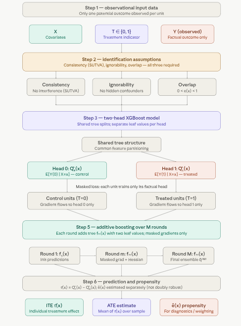
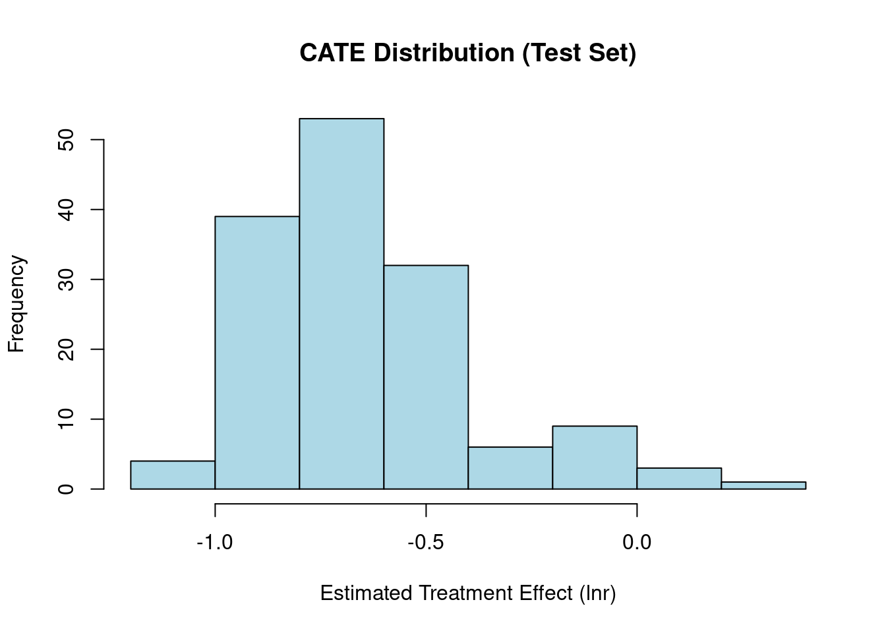
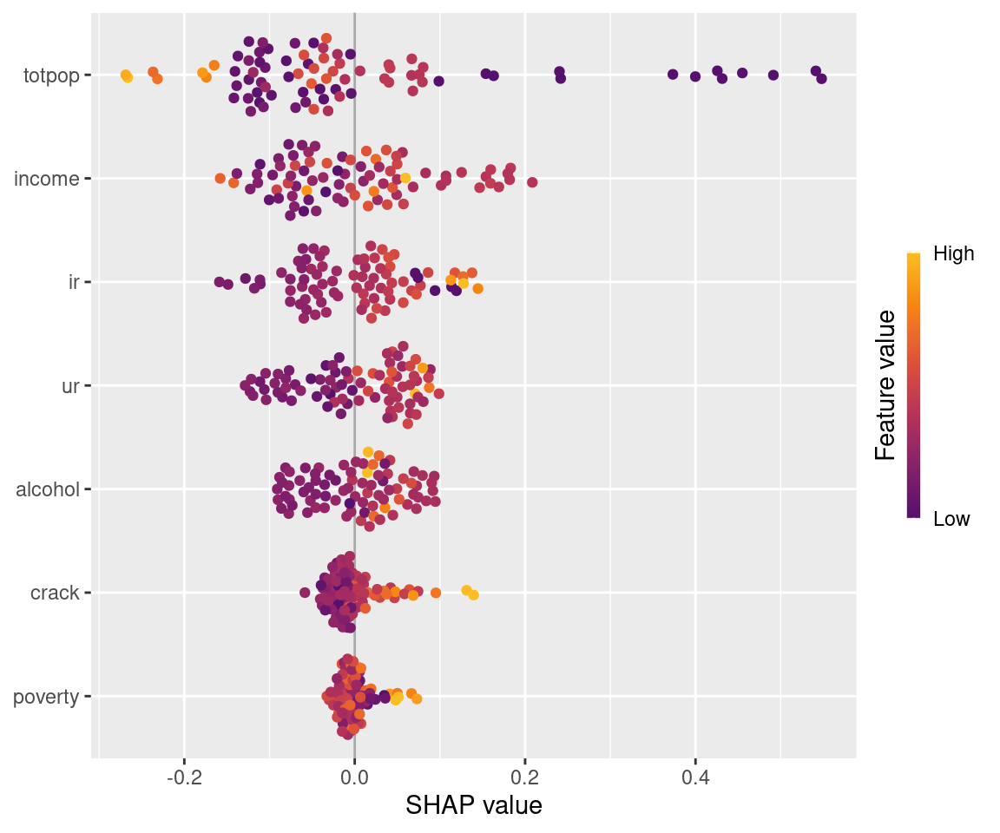
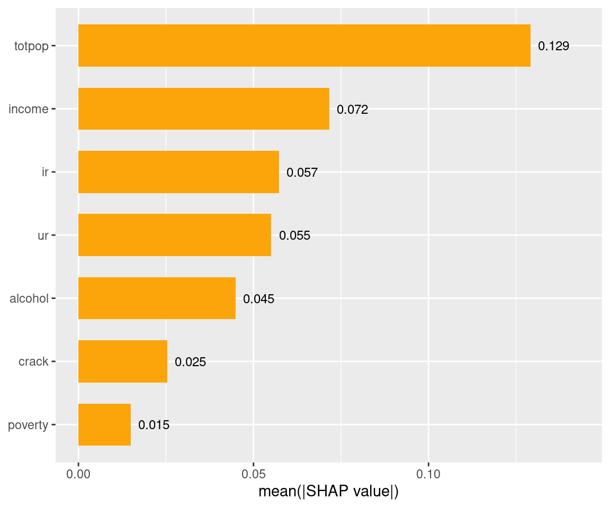
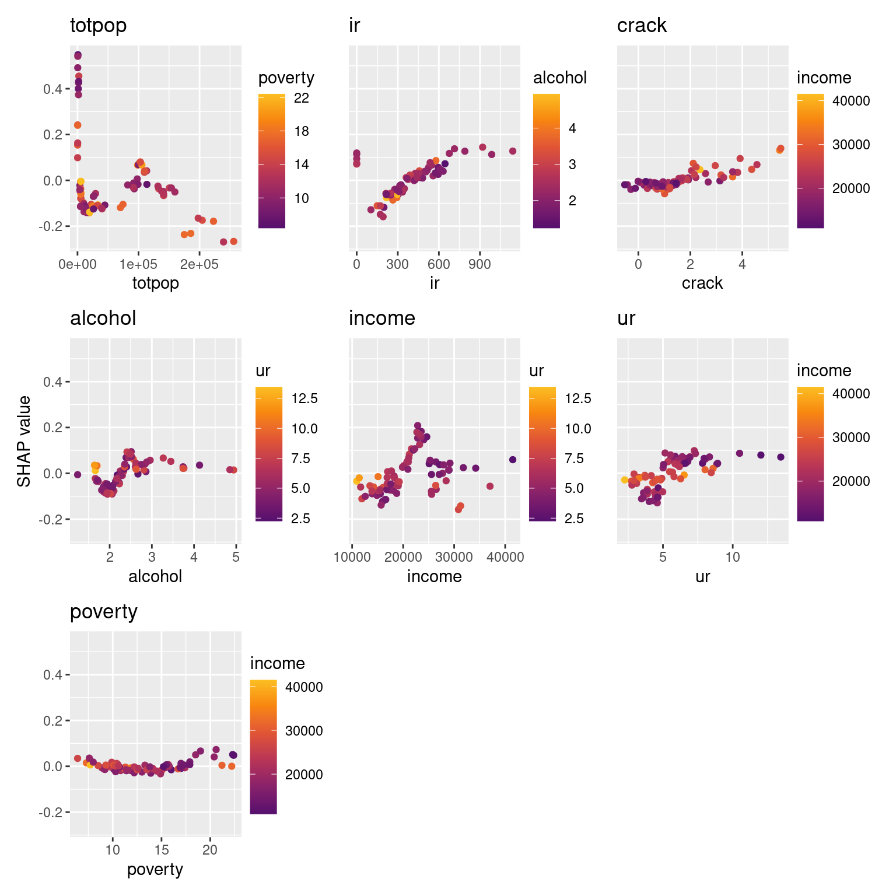
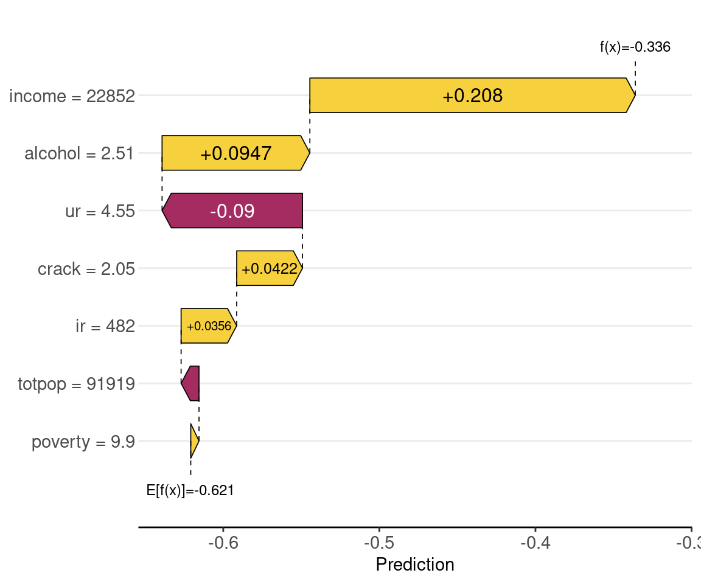
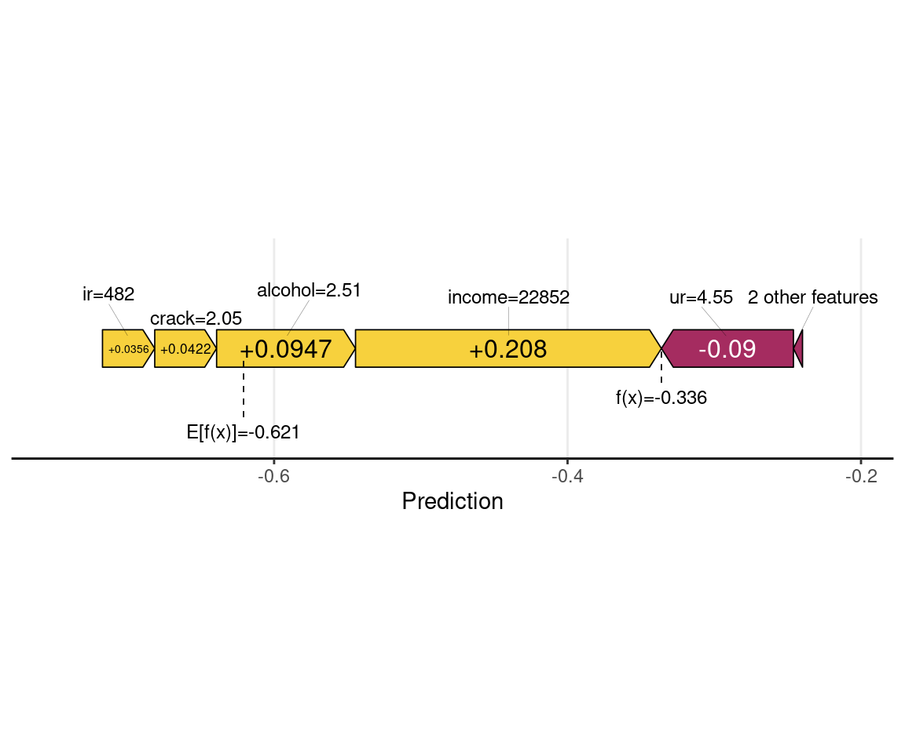
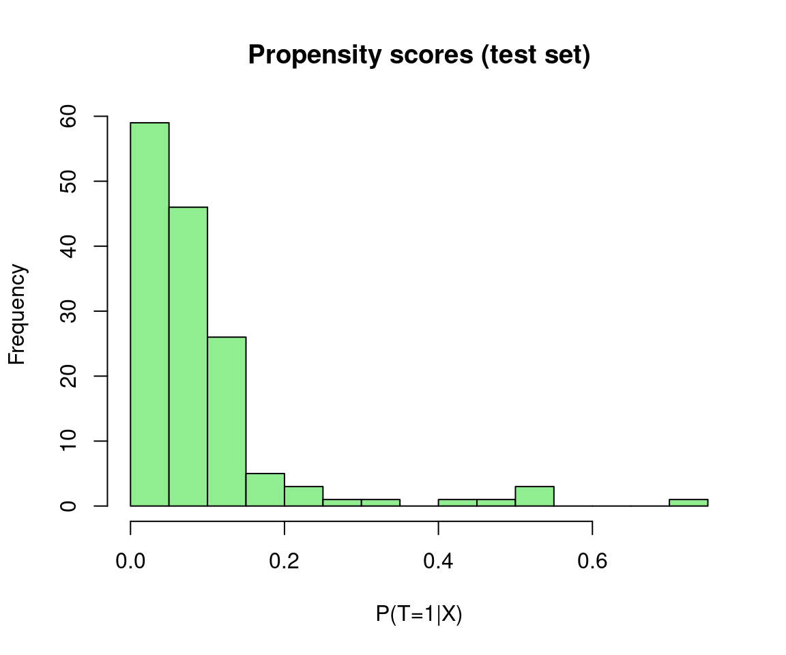

Code
packages <- c(
"tidyverse",
"plyr",
"RCausalML",
"causaldata",
"mlbench",
"xgboost"
)

C-XGBoost is a tree-boosting method for estimating individual and average treatment effects from observational data. It belongs to the outcome regression family of causal inference methods — the same conceptual family as TARNet and DragonNet — but replaces neural networks with XGBoost. The result is a model that brings DragonNet-style causal masking to boosted trees, combining the counterfactual reasoning of neural causal models with XGBoost’s well-known strengths on tabular data: robustness to irregular boundaries, excellent calibration on medium-sized datasets, and minimal tuning overhead.
The core idea is simple: train one XGBoost model with two output heads that simultaneously predict potential outcomes under control (\(\hat{Q}_0(x)\)) and treatment (\(\hat{Q}_1(x)\)). The individual treatment effect falls out as their difference.
C-XGBoost operates within the potential outcomes framework. For each unit \(i\), two potential outcomes exist — \(Y_i(0)\) under control and \(Y_i(1)\) under treatment — but only one is observed:
\[Y_i = T_i\, Y_i(1) + (1 - T_i)\, Y_i(0)\]
The quantities of interest are:
\[\tau_i = Y_i(1) - Y_i(0) \quad \text{(ITE — individual treatment effect)}\] \[\tau(x) = E[Y(1) - Y(0) \mid X = x] \quad \text{(CATE — conditional average treatment effect)}\] \[\text{ATE} = E[Y(1) - Y(0)] \quad \text{(population average)}\]
These are identifiable from observational data \((X, T, Y)\) under three standard assumptions: consistency (SUTVA — no interference between units), ignorability (no unmeasured confounders: \((Y(0), Y(1)) \perp T \mid X\)), and overlap (\(0 < e(x) < 1\), where \(e(x) = P(T=1 \mid X=x)\)). If any of these fail — especially ignorability — the estimates break down.
C-XGBoost learns two conditional expectation functions inside a single model:
\[\hat{Q}_0(x) \approx E[Y(0) \mid X = x], \qquad \hat{Q}_1(x) \approx E[Y(1) \mid X = x]\]
The ITE estimate is then:
\[\hat{\tau}(x) = \hat{Q}_1(x) - \hat{Q}_0(x)\]
The heads share tree structure but have separate leaf values. This is the key design choice: shared splits mean the model learns a common feature-space partitioning that generalizes across both heads, so counterfactuals are borrowed from structurally similar units rather than extrapolated blindly.
Each training unit contributes gradient signal to only the head that matches its observed treatment assignment:
\[\mathcal{L}_i(\theta) = (1 - t_i)\bigl(\hat{Q}_0(x_i) - y_i\bigr)^2 + t_i\bigl(\hat{Q}_1(x_i) - y_i\bigr)^2\]
In vector form, this is implemented as a masked squared error:
\[\mathcal{L} = \frac{1}{n} \sum_i \| m_i \odot (\hat{q}(x_i) - \tilde{y}_i) \|_2^2, \qquad m_i = \begin{bmatrix} 1 - t_i \\ t_i \end{bmatrix}\]
The intuition: control units (\(t_i = 0\)) teach the \(\hat{Q}_0\) head what \(Y(0)\) looks like as a function of \(X\); treated units (\(t_i = 1\)) teach the \(\hat{Q}_1\) head what \(Y(1)\) looks like. Because the splits are shared, information flows across both heads — a treated unit in region \(\mathcal{R}\) of covariate space indirectly informs the \(\hat{Q}_0\) prediction for control units in the same region, and vice versa.
XGBoost builds the two-output predictor additively over \(M\) rounds:
\[\hat{q}^{(M)}(x) = \sum_{m=1}^M f_m(x)\]
where each \(f_m\) is a tree that outputs two numbers per leaf — one for each head. At each round \(m\):
\[g_{i0} = 2(1-t_i)(\hat{q}_{i0} - y_i), \quad g_{i1} = 2t_i(\hat{q}_{i1} - y_i)\] \[h_{i0} = 2(1-t_i), \quad h_{i1} = 2t_i\]
The shared structure + separate leaf values lets the model capture rich interactions while still learning distinct counterfactual surfaces.
C-XGBoost separately fits a propensity model \(\hat{e}(x) = \widehat{P}(T=1 \mid X=x)\) — typically a random forest. Importantly, this propensity score is not integrated into the XGBoost training loss (unlike DragonNet), which means the model is not doubly robust: if the outcome model is misspecified, the propensity estimate provides no correction. The propensity is returned purely for downstream use — overlap diagnostics, inverse probability weighting, or subgroup analysis.
For a new unit \(x\), a single forward pass returns \(\hat{Q}_0(x)\), \(\hat{Q}_1(x)\), \(\hat{e}(x)\), and \(\hat{\tau}(x) = \hat{Q}_1(x) - \hat{Q}_0(x)\). Two standard evaluation metrics apply:
ATE error — absolute difference between the true and estimated population average effect.
PEHE (Precision in Estimation of Heterogeneous Effects) — mean squared error over individual effects:
\[\varepsilon_\text{PEHE} = \frac{1}{n} \sum_i \bigl((Y_i(1) - Y_i(0)) - \hat{\tau}(x_i)\bigr)^2\]
PEHE requires knowledge of both potential outcomes, so it can only be computed on semi-synthetic benchmarks (e.g., IHDP, Jobs). In real data, only indirect evaluation (e.g., policy learning, subgroup validation) is possible.

A few things worth emphasizing from the pipeline:
Step 3 is the architectural heart. The shared tree structure means splits are chosen to explain variation in both \(Y(0)\) and \(Y(1)\) simultaneously. A region of covariate space where treated and control units are interleaved will push the trees to carve boundaries that serve both heads — effectively using treated units to regularize the counterfactual surface of control units, and vice versa.
Step 4 (masked loss) is what makes this causal rather than predictive. A standard multi-output XGBoost regression would naively assign \(Y_i\) to both heads, which would corrupt the counterfactual estimates. The mask \(m_i = (1-t_i,\, t_i)\) ensures only the factual head receives gradient signal, keeping each head honest about what it actually observed.
Step 6’s propensity caveat matters practically. Because \(\hat{e}(x)\) is not wired into the training objective, severe overlap violations — regions where nearly all units are treated or nearly all are control — will degrade the counterfactual head for the sparse group, and no propensity reweighting inside the loss will correct for it. Checking the propensity score distribution before trusting CATE estimates in low-overlap regions is essential.
The RCausalML package provides an implementation of C-XGBoost in R via the R6 class CXGBoost. You create a model with CXGBoost$new(), optionally passing a list of XGBoost parameters (e.g. eta, max_depth) and an optional pre-fitted propensity_model (ranger). You then fit with $fit(X, t, y, nrounds, verbose, eval_data) and predict with $predict(X), which returns a list with y0_hat, y1_hat, tau_hat (ITE), and propensity_score. The package also provides:
$summary() — formatted print of model config, fit time, propensity OOB error, and top variable importance.$evaluate(y_true, X) — computes PEHE and ATE error against ground-truth (matrix [Y(0), Y(1)] or vector of true ITEs) and returns a list with PEHE, ATE_error, tau_hat, y0_hat, y1_hat.$plot_importance(top_n, metric) — ggplot2 variable importance chart (Gain, Cover, or Frequency).$save_model(path) and load_cxgboost(path) — save/load fitted models.$clone_reset() — return an unfitted copy with the same hyperparameters (e.g. for cross-validation).The package exports PEHE() and ATE() with two calling conventions: matrix form (y, y_hat) with columns [Y(0), Y(1)], or vector form (tau_true, tau_hat) for ITEs.
Following R packages are required to run this notebook. If any of these packages are not installed, you can install them using the code below:
tidyverse, plyr, RCausalML, causaldata, mlbench, xgboost
packages <- c(
"tidyverse",
"plyr",
"RCausalML",
"causaldata",
"mlbench",
"xgboost"
)# Install missing packages
# new_packages <- packages[!(packages %in% installed.packages()[, "Package"])]
# if (length(new_packages)) install.packages(new_packages)# Load packages with suppressed messages
invisible(lapply(packages, function(pkg) {
suppressPackageStartupMessages(library(pkg, character.only = TRUE))
}))# Check loaded packages
cat("Successfully loaded packages:\n")Successfully loaded packages: [1] "package:xgboost" "package:mlbench" "package:causaldata"
[4] "package:RCausalML" "package:plyr" "package:lubridate"
[7] "package:forcats" "package:stringr" "package:dplyr"
[10] "package:purrr" "package:readr" "package:tidyr"
[13] "package:tibble" "package:ggplot2" "package:tidyverse"
[16] "package:stats" "package:graphics" "package:grDevices"
[19] "package:utils" "package:datasets" "package:methods"
[22] "package:base" # Synthetic data: generate potential outcomes and observed (X, T, Y)
set.seed(42)
n_syn <- 500
p_syn <- 5
X_syn <- matrix(rnorm(n_syn * p_syn), n_syn, p_syn)
tau_syn <- 0.5 * X_syn[, 1] + 0.3 * X_syn[, 2] # CATE
Y0_syn <- 1 + rowSums(X_syn[, 1:2]) + rnorm(n_syn, 0, 0.5)
Y1_syn <- Y0_syn + tau_syn
e_syn <- plogis(0.5 * X_syn[, 1])
T_syn <- as.integer(runif(n_syn) < e_syn)
Y_syn <- ifelse(T_syn == 1, Y1_syn, Y0_syn)
potential_Y_syn <- cbind(Y0_syn, Y1_syn)
# Train / test split
idx_train <- sample(1:n_syn, 0.8 * n_syn)
trainX <- X_syn[idx_train, ]; trainT <- T_syn[idx_train]; trainY <- Y_syn[idx_train]
testX <- X_syn[-idx_train, ]; test_potential_Y <- potential_Y_syn[-idx_train, ]CXGBoost() fits a two-head XGBoost regressor with the masked loss. The parameters list can include any XGBoost hyperparameters (e.g. eta, max_depth, lambda, alpha, tree_method). The number of boosting rounds is passed separately to fit() via nrounds.
Here below we show the constructor parameters and default XGBoost parameters used in fit() if not overridden. The defaults are designed for general tabular data but can be tuned for specific datasets.
Constructor parameters (for CXGBoost$new(...))
| Parameter | Type | Default | Description |
|---|---|---|---|
parameters |
list |
list() |
XGBoost hyperparameters to override defaults. Can include: eta, max_depth, subsample, colsample_bytree, min_child_weight, lambda, alpha, tree_method, num_target, multi_strategy. |
propensity_model |
ranger or NULL
|
NULL |
Pre-fitted ranger model for propensity scores. If NULL, a ranger model (200 trees, max.depth 4) is fitted inside fit() from X and t; OOB error is stored in $oob_error. |
scale_pos_weight |
(optional) | NULL |
Reserved for future use. |
Default XGBoost parameters (used in fit() if not overridden)
Defined in fit() and merged with self$parameters:
eta = 0.05max_depth = 6subsample = 0.8colsample_bytree = 0.8min_child_weight = 1lambda = 1alpha = 0tree_method = "hist"num_target = 2Lmulti_strategy = "multi_output_tree"disable_default_eval_metric = TRUEfit() parameters (training)
X – Covariate matrix (numeric). NAs are median-imputed before training.t – Binary treatment (0/1), length = nrow(X).y – Observed outcome, same length as t.nrounds – XGBoost boosting rounds (default 100).verbose – Integer verbosity: 0 = silent, 1 = progress (default 0).eval_data – Optional list list(X=..., t=..., y=...) for XGBoost watchlist; evaluation loss is printed when verbose >= 1 (no early stopping applied).model <- CXGBoost$new(parameters = list(eta = 0.1, max_depth = 8))
model$fit(X, t, y, nrounds = 200, verbose = 0)
# Optional: eval_data = list(X = X_val, t = t_val, y = y_val) for watchlistBelow we fit with a simple configuration; feel free to experiment with different hyperparameters and see how it affects the results.
# Fit with same model configuration
model_syn <- CXGBoost$new(parameters = list(
max_depth = 5,
eta = 1e-2,
lambda = 5,
alpha = 1.0,
tree_method = "hist",
nthread = -1
))
model_syn$fit(trainX, trainT, trainY, nrounds = 100L, verbose = 0L)predict() returns y0_hat, y1_hat, tau_hat, and propensity_score. For evaluation when ground truth is available, use $evaluate(y_true, X) or the exported PEHE() and ATE() (matrix or vector form).
# Predict (includes tau_hat = y1_hat - y0_hat)
pred_syn <- model_syn$predict(testX)
predicted_potential_outcomes_syn <- cbind(pred_syn$y0_hat, pred_syn$y1_hat)# Print model summary (config, fit time, propensity OOB, top variables)
model_syn$summary()
CXGBoost Model Summary
Configuration
eta (learning rate) : 0.0100
max_depth : 5
subsample : 0.80
colsample_bytree : 0.80
lambda (L2) : 5.00
alpha (L1) : 1.00
Boosting rounds : two_boosters
Fit time : 4.27 sec
Propensity Model
Ranger OOB error : 0.2394
Ranger num.trees : 200
Ranger max.depth : 4
Top 10 Variables (XGBoost gain)
f0 0.5268
f1 0.4239
f4 0.0176
f3 0.0173
f2 0.0144 # Evaluate against ground truth: $evaluate() accepts matrix [Y(0), Y(1)] or ITE vector
eval_syn <- model_syn$evaluate(y_true = test_potential_Y, X = testX) PEHE : 0.569580
ATE error : 0.547519True ATE : -0.038# Alternative: PEHE(y, y_hat) and ATE(y, y_hat), or vector form PEHE(tau_true=..., tau_hat=pred_syn$tau_hat)R package causaldata provides a collection of datasets for causal inference. We integrate {causaldata} with {RCausalML} to easily load datasets. In this tutorial, we use the abortion dataset, which contains state-year observations on gonorrhea rates among 15–19 year olds, with a binary indicator for early repeal of abortion prohibition. This dataset is commonly used to study the effects of abortion legalization on risky sexual behavior among teenagers, proxied by gonorrhea rates.
This dataset is commonly used to study the causal effects of abortion legalization policies (specifically, early repeal of abortion prohibitions in certain U.S. states) on risky sexual behavior among teenagers. Risky behavior is proxied by the incidence of gonorrhea (a sexually transmitted infection) among 15–19 year olds. The idea is that access to abortion might influence sexual decision-making or risk-taking behavior in this age group.
Here are the most important columns (based on the package documentation):
# causaldata integration
list_causaldata_datasets()The outcome variable is typically lnr (logged gonorrhea rate per 100,000 population among 15–19 year olds), which measures the logged incidence of gonorrhea as a proxy for risky sexual behavior.
# Load abortion dataset (use $data for the raw dataframe; load_causaldata returns list with X, w, y, data, citation)
abortion <- load_causaldata("abortion")$data
# Quick look
head(abortion)str(abortion)tibble [737 × 22] (S3: tbl_df/tbl/data.frame)
$ fip : num [1:737] 1 1 1 1 1 1 1 1 1 1 ...
..- attr(*, "label")= chr "FIPSCODE"
..- attr(*, "format.stata")= chr "%8.0g"
$ age : num [1:737] 15 15 15 15 15 15 15 15 15 15 ...
..- attr(*, "label")= chr "AGE"
..- attr(*, "format.stata")= chr "%9.0g"
$ race : num [1:737] 2 2 2 2 2 2 2 2 2 2 ...
..- attr(*, "label")= chr "w-1, b-2"
..- attr(*, "format.stata")= chr "%9.0g"
$ year : num [1:737] 1985 1986 1987 1988 1989 ...
..- attr(*, "label")= chr "YEAR"
..- attr(*, "format.stata")= chr "%8.0g"
$ sex : num [1:737] 2 2 2 2 2 2 2 2 2 2 ...
..- attr(*, "label")= chr "m-1, f-2"
..- attr(*, "format.stata")= chr "%9.0g"
$ totpop : num [1:737] 106187 106831 106496 105238 102956 ...
..- attr(*, "label")= chr "TOTPOP"
..- attr(*, "format.stata")= chr "%12.0g"
$ ir : num [1:737] 101 112 123 134 146 ...
..- attr(*, "label")= chr "Incarcerated Males per 100,000"
..- attr(*, "format.stata")= chr "%9.0g"
$ crack : num [1:737] 0.217 0.277 0.211 0.56 0.722 ...
..- attr(*, "label")= chr "Crack index"
..- attr(*, "format.stata")= chr "%9.0g"
$ alcohol: num [1:737] 1.9 1.9 1.89 1.89 1.87 ...
..- attr(*, "label")= chr "Alcohol consumption per capita"
..- attr(*, "format.stata")= chr "%9.0g"
$ income : num [1:737] 11566 12164 12826 13698 14865 ...
..- attr(*, "label")= chr "Real income per capita"
..- attr(*, "format.stata")= chr "%9.0g"
$ ur : num [1:737] 8.62 9.08 7.65 6.92 6.62 ...
..- attr(*, "label")= chr "State unemployment rate"
..- attr(*, "format.stata")= chr "%9.0g"
$ poverty: num [1:737] 20.6 23.8 21.3 19.3 18.9 ...
..- attr(*, "label")= chr "Poverty rate"
..- attr(*, "format.stata")= chr "%9.0g"
$ repeal : num [1:737] 0 0 0 0 0 0 0 0 0 0 ...
..- attr(*, "format.stata")= chr "%9.0g"
$ acc : num [1:737] 0.68 1.53 3.5 6.26 9.42 ...
..- attr(*, "label")= chr "AIDS mortality per 100,000 cumulative in t, t-1, t-2, t-3"
..- attr(*, "format.stata")= chr "%9.0g"
$ wht : num [1:737] 0 0 0 0 0 0 0 0 0 0 ...
..- attr(*, "label")= chr "White Indicator"
..- attr(*, "format.stata")= chr "%9.0g"
$ male : num [1:737] 0 0 0 0 0 0 0 0 0 0 ...
..- attr(*, "label")= chr "Male Indicator"
..- attr(*, "format.stata")= chr "%9.0g"
$ lnr : num [1:737] 8.78 8.76 8.66 8.72 8.69 ...
..- attr(*, "format.stata")= chr "%9.0g"
$ t : num [1:737] 1 2 3 4 5 6 7 8 9 10 ...
..- attr(*, "format.stata")= chr "%9.0g"
$ younger: num [1:737] 1 1 1 1 1 1 1 1 1 1 ...
..- attr(*, "format.stata")= chr "%9.0g"
$ fa : num [1:737] 1 1 1 1 1 1 1 1 1 1 ...
..- attr(*, "format.stata")= chr "%9.0g"
$ pi : num [1:737] 0 0 1 1 1 1 1 1 1 1 ...
..- attr(*, "format.stata")= chr "%9.0g"
$ bf15 : num [1:737] 1 1 1 1 1 1 1 1 1 1 ...
..- attr(*, "format.stata")= chr "%9.0g"summary(abortion$repeal) # Treatment balance Min. 1st Qu. Median Mean 3rd Qu. Max.
0.0000 0.0000 0.0000 0.1085 0.0000 1.0000 table(abortion$repeal, abortion$race) # Example crosstab
2
0 657
1 80# Select relevant subset (focus on 15-19 year olds, complete cases)
abortion_clean <- abortion %>%
dplyr::filter(age >= 15 & age <= 19) %>%
na.omit()
# Define covariates (X), outcome (Y), treatment (W)
X <- abortion_clean[, c("age", "race", "sex", "totpop", "ir", "crack",
"alcohol", "income", "ur", "poverty")]
Y <- abortion_clean$lnr # Logged gonorrhea rate per 100,000 (continuous)
W <- abortion_clean$repeal # 1 = early repeal (treatment), 0 = otherwise
# Convert X to numeric matrix
X <- as.matrix(X)
colnames(X) <- c("age", "race", "sex", "totpop", "ir", "crack",
"alcohol", "income", "ur", "poverty")
# Remove near-zero variance columns (if any)
X <- X[, apply(X, 2, stats::var) > 1e-10, drop = FALSE]
cat("Covariates used:", colnames(X), "\n")Covariates used: totpop ir crack alcohol income ur poverty We’ll split the data into 80% training and 20% test sets using random sampling.
# Split data into training (80%) and test (20%) sets
train_prop <- 0.8
n <- nrow(abortion_clean)
train_idx <- sample(1:n, size = round(train_prop * n))
X_train <- X[train_idx, , drop = FALSE]
Y_train <- Y[train_idx]
W_train <- W[train_idx]
X_test <- X[-train_idx, , drop = FALSE]
Y_test <- Y[-train_idx]
W_test <- W[-train_idx]
cat("Training set size:", nrow(X_train), "\n")Training set size: 590 Test set size: 147 Column names of X_train: totpop ir crack alcohol income ur poverty The CXGBoost R6 class fits a two-head XGBoost outcome model (and an optional propensity model via ranger).
Key arguments for CXGBoost:
parameters: List of XGBoost hyperparameters (e.g. eta, max_depth, lambda, alpha, tree_method). Defaults include num_target = 2, multi_strategy = "multi_output_tree".$fit(X, t, y, nrounds, verbose, eval_data): X = covariate matrix (NAs median-imputed), t = binary treatment (0/1), y = observed outcome; nrounds = boosting rounds (default 100); optional eval_data for watchlist when verbose >= 1.$predict(X): Returns a list with y0_hat, y1_hat, tau_hat, and propensity_score.$summary(), $evaluate(y_true, X), $plot_importance(), $save_model(path), load_cxgboost(path), $clone_reset(): see the Implementation in R section above.# -----------------------------------------------------------------------------
# Model Configuration and Training
# -----------------------------------------------------------------------------
model_params <- list(
max_depth = 5,
eta = 1e-2, # learning_rate
nrounds = 100, # n_estimators (passed to fit())
nthread = -1, # n_jobs = -1 (use all cores)
lambda = 5,
alpha = 1.0, # reg_alpha
# reg_lambda in Python is lambda above
tree_method = "hist"
)
nrounds <- model_params$nrounds
model_params$nrounds <- NULL # fit() takes nrounds separately
cx_model <- CXGBoost$new(parameters = model_params)
cx_model$fit(X_train, W_train, Y_train, nrounds = nrounds, verbose = 0L)
cx_model$summary()
CXGBoost Model Summary
Configuration
eta (learning rate) : 0.0100
max_depth : 5
subsample : 0.80
colsample_bytree : 0.80
lambda (L2) : 5.00
alpha (L1) : 1.00
Boosting rounds : two_boosters
Fit time : 1.18 sec
Propensity Model
Ranger OOB error : 0.0575
Ranger num.trees : 200
Ranger max.depth : 4
Top 10 Variables (XGBoost gain)
income 0.3360
totpop 0.2834
ur 0.1846
alcohol 0.0747
ir 0.0648
crack 0.0306
poverty 0.0259 Sample ATE on the training set (mean of predicted CATE). The predict() output includes tau_hat for convenience.
Training sample ATE (mean CATE): -0.6037 The ATE is the average treatment effect on the logged gonorrhea rate (lnr) across the training population—i.e., how much early repeal of abortion prohibition is associated with a change in lnr.
# -----------------------------------------------------------------------------
# Prediction (returns y0_hat, y1_hat, tau_hat, propensity_score)
# -----------------------------------------------------------------------------
pred_test <- cx_model$predict(X_test)
predicted_potential_outcomes <- cbind(pred_test$y0_hat, pred_test$y1_hat)
cate_test_pred <- pred_test$tau_hat
hist(cate_test_pred, main = "CATE Distribution (Test Set)", xlab = "Estimated Treatment Effect (lnr)", col = "lightblue")
C-XGBoost does not implement RATE/AUTOC; for prioritization metrics use {grf} with a causal forest. Below we summarize CATE heterogeneity on the test set and the sample ATE.
CATE on test set: mean = -0.643 , sd = 0.27 Sample ATE (test): -0.6428 Range: -1.146 to 0.206 When ground-truth potential outcomes are available (e.g. synthetic data), use $evaluate(y_true, X) (which accepts a matrix [Y(0), Y(1)] or a vector of true ITEs) or the exported PEHE() and ATE() (matrix form (y, y_hat) or vector form (tau_true, tau_hat)). The abortion dataset is observational, so we do not observe both potential outcomes [Y(0), Y(1)] for each unit; true PEHE and ATE error cannot be computed. The code below illustrates the placeholder case (all NA) for completeness.
# Observational data: no ground-truth potential outcomes
test_potential_Y <- matrix(NA_real_, nrow = nrow(predicted_potential_outcomes), ncol = 2)
colnames(test_potential_Y) <- c("Y0", "Y1")
# With synthetic data you would use: model$evaluate(y_true = test_potential_Y, X = testX)
cat("For observational data, PEHE/ATE evaluation is not available (no ground-truth ITEs).\n")For observational data, PEHE/ATE evaluation is not available (no ground-truth ITEs).Sample ATE (mean predicted CATE): -0.6428 Use the built-in $plot_importance() method for a ggplot2 chart. You can pass top_n and metric ("Gain", "Cover", or "Frequency"). The model uses a multi-output tree (num_target = 2); importance is over the shared tree structure (or the Y(1) booster in two-booster fallback mode).
cx_model$plot_importance(top_n = 15L, metric = "Gain")
We use the {shapviz} package for SHAP analysis. This package is integrated with {RCausalML} via explain_cate(): you compute SHAP values with {kernelshap} (or {permshap}), then pass the result to shapviz() for importance, dependence, waterfall, and force plots.
SHAP values are computed for the causal forest’s CATE predictions using explain_cate(), then visualized with {shapviz}. A subsample of the training data is used for speed.
explain_cate <- function(object,
X,
bg_X = NULL,
n_samples = NULL,
use_permshap = FALSE,
pred_fun = NULL, # keep this
...) { # ... for bg_n, verbose, etc.
if (!requireNamespace("kernelshap", quietly = TRUE)) {
stop("...")
}
X <- as.data.frame(X)
if (!is.null(n_samples) && nrow(X) > n_samples) {
X <- X[seq_len(n_samples), , drop = FALSE]
}
if (!is.null(bg_X)) bg_X <- as.data.frame(bg_X)
# Define default only if not provided
if (is.null(pred_fun)) {
pred_fun <- function(m, x) rcausalml_predict_numeric(m, as.data.frame(x))
}
if (use_permshap) {
ks <- kernelshap::permshap(object, X = X, pred_fun = pred_fun, bg_X = bg_X, ...)
} else {
ks <- kernelshap::kernelshap(object, X = X, pred_fun = pred_fun, bg_X = bg_X, ...)
}
ks
} # Subsample for speed (kernelshap can be slow on large data)
set.seed(42)
n_explain <- min(80, nrow(X_train))
X_explain <- as.data.frame(X_train[sample(nrow(X_train), n_explain), ])
xvars <- colnames(X_explain)
# To avoid the "pred_fun matched by multiple actual arguments" error,
# do NOT set 'pred_fun' directly in explain_cate() when use_permshap = TRUE.
# For kernelshap (the default), passing pred_fun is acceptable:
ks <- explain_cate(
cx_model,
X_explain,
bg_X = X_explain,
use_permshap = FALSE,
verbose = FALSE,
# Pass custom pred_fun without naming it "pred_fun" again if you want,
# but since the argument exists in the wrapper, this is fine and clear:
pred_fun = function(object, newdata) {
object$predict(as.matrix(newdata))$tau_hat
}
)
shp <- shapviz::shapviz(ks)shapviz::sv_importance(shp, kind = "beeswarm")
shapviz::sv_importance(shp, show_numbers = TRUE)
Dependence of SHAP values on each covariate (patchwork object).
shapviz::sv_dependence(shp, v = xvars, share_y = TRUE)
Waterfall and force plots show how each feature contributes to the predicted CATE for one observation.
shapviz::sv_waterfall(shp, row_id = 1) +
theme(axis.text = element_text(size = 11))
shapviz::sv_force(shp, row_id = 1)
You can show waterfall plots for a subset of observations (e.g., by covariate). Here we show one observation where sex == 2 (female) as an example; the bar importance plot above summarizes average |SHAP| across all explained rows.
if (exists("shp") && "sex" %in% names(shp$X)) {
idx_female <- which(shp$X$sex == 2)
row_show <- if (length(idx_female) > 0) idx_female[1] else 1
shapviz::sv_waterfall(shp, row_id = row_show) +
theme(axis.text = element_text(size = 11))
} else if (exists("shp")) {
shapviz::sv_waterfall(shp, row_id = 2) +
theme(axis.text = element_text(size = 11))
}
C-XGBoost fits a separate propensity model (ranger) and returns propensity scores with predictions. These are not used in the XGBoost loss but are useful for diagnostics or weighting.
hist(pred_test$propensity_score, main = "Propensity scores (test set)", xlab = "P(T=1|X)", col = "lightgreen", breaks = 20)
C-XGBoost (causal XGBoost) is a boosted tree model for estimating heterogeneous treatment effects from observational data. It fits a single multi-output XGBoost with two heads for potential outcomes Y(0) and Y(1), using a DragonNet-style treatment mask so each unit only contributes loss to its factual head. The RCausalML package provides the R6 class CXGBoost with $fit(), $predict() (returning y0_hat, y1_hat, tau_hat, propensity_score), $summary(), $evaluate(y_true, X), $plot_importance(), $save_model() / load_cxgboost(), and $clone_reset(), plus exported PEHE() and ATE() (matrix or vector form) for evaluation when ground-truth potential outcomes exist. This tutorial demonstrated fitting C-XGBoost on synthetic data and on the abortion dataset from causaldata, including data preprocessing, training, CATE prediction, sample ATE, variable importance via $plot_importance(), and propensity scores from the built-in ranger model.
This tutorial covered the core concepts, implementation details, and evaluation workflow for C-XGBoost in R. For more advanced use cases (e.g., RATE/AUTOC, doubly-robust extensions, multiclass potential outcomes), additional methods and packages may be needed. We encourage readers to explore the reference implementation and related literature for deeper understanding and further experimentation.
C-XGBoost: two-head XGBoost with treatment masking for causal inference (see package R/causalXGBoost.R and C-XGBoost reference implementation).
DragonNet-style outcome regression: Shi et al., “Adapting Neural Networks for the Estimation of Treatment Effects” (2019).
For causal forests and RATE/AUTOC in R, see the {grf} package (Athey, Tibshirani, Wager; Annals of Statistics, 2019).